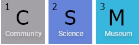
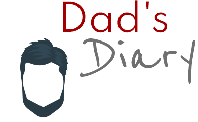

For this portfolio I re-visited my previous assignments throughout the year and made appropriate changes to them. Laid out below are the new and improved website links, along with an outline of the changes I have made to each.
Cross Course Project - Conscious Coffee
Click here to visit the Conscious Coffee website.
Click here to view the repo for Conscious Coffee on GitHub.
Website Changes:
- In the footer, I put the 'i' element inside the li as they can't be the direct child of a ul element, I made this correction based off the feedback I received for this assignment. I also changed the footer li to bold and made them smaller.
- Changed the cursor to a pointer for the hamburger menu.
- Made the whole CTA button clickable on the home page, instead of just the text inside.
- Changed the href to the norwegian version of the pages when the li items are clicked in the header and footer.
- Set the HTML whitespace sensitivity to ignore to remove any strange wrapping issues in the HTML. I made this correction based off the feedback I received for this assignment.
- Changed the styling on the store page and product specific page to neaten it up (add to basket buttons, the h1s, the h2s, spacing around items).
- Added functionality to the add to basket buttons so items get added to a basket and the total price of the items gets added up.
- Removed the basket icon from the heading as it has no functionality so looks confusing.
- Added a checkout button that takes you to a basket items page using local storage.
- Added a payment page that uses form validation.
Semester Project 1 - Community Science Museum
Click here to visit the Community Science Musem website.
Click here to view the repo for Community Science Museum on GitHub.
Website Changes:
- Changed the nav li to change colour on hover.
- Gave the main a max width of 1000px to make it easier to read.
- Removed the second, smaller images on the exhibition info as they looked out of place.
- Increased the margins on the hr tags to give more space to the sections.
- Changed the width and height of the images on the exhibitions page (some were different sizes to others).
- Changed the favicon to the atom logo image.
- Centred the social media icons and added more space around them.
- Neatened up the CSS, grouped together global stylings and media queries. This was based off feedback I had received.
- Grouped together font families in one style sheet and added Montserrat. This was based off feedback I had received.
Project Exam 1 - Dad's Diary
Click here to visit the Dad's Diary website.
Click here to view the repo for Dad's Diary on GitHub.
Website Changes:
- Added the "current" class to the li in the footer.
- Added extra images to some of the blog posts.